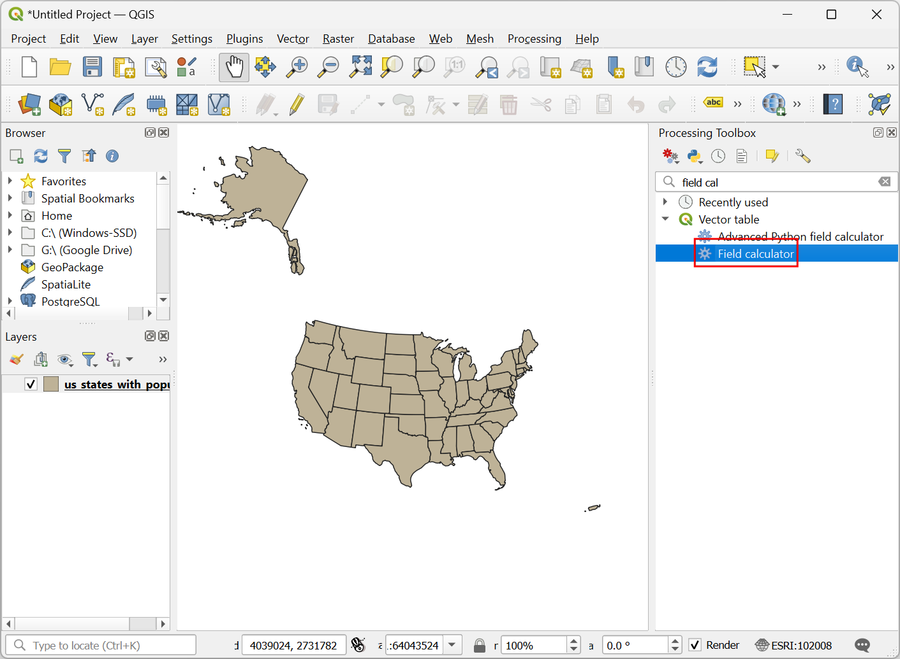
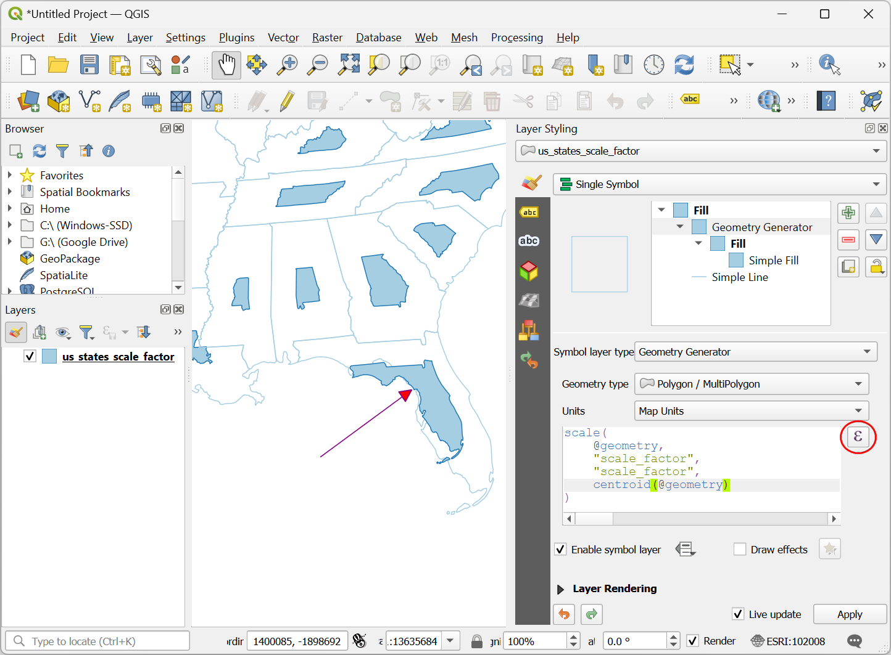
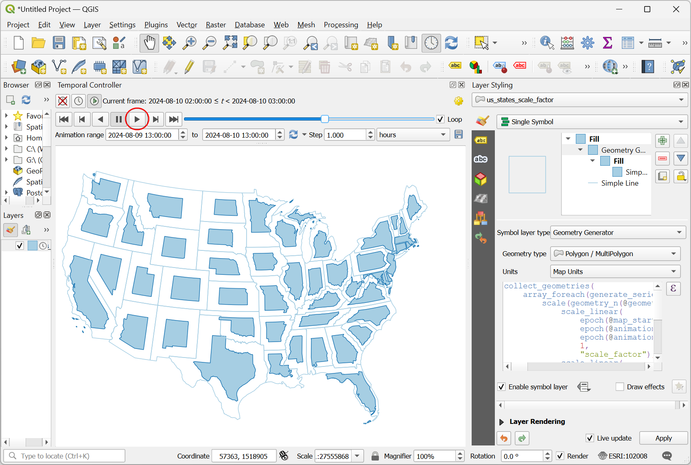

Een geanimeerd cartogram maken (QGIS3)¶
Een cartogram is een type kaartvisualisatie waarin de vorm van elk object in verhouding is vervormd tot een variabele. Cartogrammen maken het gemakkelijk grote variaties in de gegevens te zien. De eenvoudigste methode om een cartogram te maken is door de grootte van elke regio op schaal te brengen, overeenkomstig een variabele. Deze methode behoudt de originele vorm van de polygoon en wijzigt alleen de grootte. Deze staan bekend als Niet-aaneensluitende isomorfische cartogrammen. In deze handleiding zullen we leren hoe expressies van QGIS te gebruiken om een cartogram te maken en Tijdbeheer te gebruiken om een animatie te maken die de objecten gradueel vervormt tot de doelgrootte.
This tutorial is inspired by Keith Jenkins’s Demo and builds on Hans van der Kwast’s excellent cartogram tutorial. The formula for scale factor used here is from the original paper Noncontiguous Area Cartograms by Judy M Olson.
Overzicht van de taak¶
We will take a layer of states in the US and create an animated cartogram by scaling each state by population. The resulting map will have each state’s area proportional its population.

De gegevens ophalen¶
United States Census Bureau verschaft cartografische bestanden met grenzen, naast demografische gegevenssets. We zullen de gegevens downloaden en ze verwerken om een gegevenslaag te maken die geschikt is voor onze taak.
Bezoek de pagina met gegevens Cartographic Boundary Files - Shapefile. Download het bestand
cb_2018_us_state_20m.zip. Dat heeft de polygonen die we nodig hebben voor de visualisatie.

De polygonen van de staten hebben geen demografische gegevens. Deze gegevens moeten afzonderlijk worden gedownload en afzonderlijk worden samengevoegd met de Shapefile om in een GIS te kunnen gebruiken. Bezoek de pagina State Population Totals and Components of Change: 2020-2023 en download de gegevensset Annual Population Estimates, Estimated Components of Resident Population Change, and Rates of the Components of Resident Population Change for the United States, States, District of Columbia, and Puerto Rico: April 1, 2020 to July 1, 2023 , die zal worden gedownload als
NST-EST2023-ALLDATA.csv.

Open QGIS. Zoek naar het bestand
cb_2018_us_state_20m.zipin de QGIS Browser en vergroot het. Sleep het bestandcb_2018_us_state_20m.shpnaar het kaartvenster en zet het daar neer.

Een nieuwe laag
cb_2018_us_state_20mzal worden toegevoegd aan het paneel Lagen. Vervolgens zullen we het CSV-bestand laden. Klik op de knop Databronnen beheren openen.

Schakel naar de tab Tekengescheiden tekst. Klik op de knop … naast Bestandsnaam en blader naar het gedownloade bestand
NST-EST2023-ALLDATA.csv. Vergroot het gedeelte Geometrie definitie en selecteerGeen geometrie (alleen attributentabel). Klik op Toevoegen.

A new layer
NST-EST2023-ALLDATAwill be added to the Layers panel. Right-click and select Open Attribute Table. This table has the population counts in thePOPESTIMATE2023column. Each state has a unique id in theSTATEcolumn that we will use to join this table with the polygon layer.

Right-click the
cb_2018_us_state_20mlayer and select Open Attribute Table. The state ids are contained in theGEOIDcolumn. While the numbers are the same, they are formatted as a 2-digit 0-padded number. To match these with theSTATEcolumn from our population table, we need similarly formatted numbers. Select theNST-EST2023-ALLDATA. Go to . Search and locate the algorithm. Double-click to open it.

In het dialoogvenster Veld calculator, selecteer
NST-EST2023-ALLDATAals de Invoerlaag, voerGEOIDin als de Veldnaam, en stel Type resultaatveld ` in als ``Tekst (string)`. We zullen nu de getallen uit het veldSTATEnemen en de functielpad()gebruiken om een 2-cijferige tekenreeks, aangevuld met voorloopnullen te maken. Voer de volgende expressie in en klik op Uitvoeren
lpad("STATE", 2, '0')
Een nieuwe laag
Berekendzal worden toegevoegd aan het paneel Lagen. Klik met rechts en selecteer Attributentabel openen. Merk op dat de nieuw gemaakte kolomGEOIDde correct opgemaakte identificaties heeft. We kunnen nu dat veld gebruiken om deze tabel samen te voegen met de laag van de staten. Zoek en lokaliseer het algoritme . Dubbelklik erop om het te openen.

In het dialoogvenster Attributen koppelen op veldwaarde, selecteer
cb_2018_us_state_20mals de Invoerlaag. SelecteerGEOIDals het Tabelveld. Voor Invoerlaag 2, selecteer onze tabelBerekenden voor Tabelveld 2, selecteerGEOID. De tabel heeft heel veel kolommen, maar we hebben alleen het aantal inwoners van het laatste jaar nodig. Klik op de knop … voor Velden van laag 2 om te kopiëren en selecteer alleen het veldPOPESTIMATE2023. Laat alle andere opties op hun standaardwaarde en klik op Uitvoeren.

Een nieuwe laag
Samengevoegde laagzal worden toegevoegd aan het paneel Lagen. Laten we, voordat we deze laag gebruiken voor ons cartogram, die opnieuw projecteren naar een geprojecteerd CRS. Zoek en lokaliseer het algoritme . Dubbelklik erop om het te openen.

In the Reproject layer dialog, select
Joined layeras the Input layer. For the Target CRS, click the Select CRS button. Search for theNorth_America_Albers_Equal_Area_ConicCRS and select it. This is our final layer so we will save it to disk. Click the … button next to Reprojected and select Save to File….

Voer als naam voor de laag in
us_states_with_population.gpkgen selecteer Opslaan. Klik op Uitvoeren om het bestand GeoPackage met de opnieuw geprojecteerde gegevens te maken.

We zullen deze laag gebruiken in het volgende gedeelte. Voor het gemak kunt u direct een kopie van bovenstaande laag downloaden vanaf hieronder:
us_states_with_population.gpkg
Gegevensbron [USCENSUS]
Procedure¶
Begin een nieuw project in QGIS. Lokaliseer het bestand
us_states_with_population.gpkgin de Browser en vergroot het. Sleep de laagus_states_with_populationin het lege kaartvenster en zet hem daar neer.

A new layer
us_states_with_populationwill be added to the Layers panel. Right-click and select Open Attribute Table. For our cartogram, we need to use the population density as the variable. We will use the population values in thePOPESTIMATE2023field. Close the attribute table.

Search and locate the algorithm from the Processing Toolbox. Double-click to open it.

In the Field calculator dialog, select
us_states_with_populationas the Input layer. Enterdensityas the Field name. Enter the following expression to compute the density. As the functionarea(@geometry)calculates the area in the unit of the CRS (which is in meters), we apply the conversion factor to convert it to square kilometers. Click Run.
1000*1000* "POPESTIMATE2023" / area(@geometry)
Click the … button next to Calculated and select Save to File…. Enter the name of the layer as
us_states_population_density.gpkgand select Save. Click Run.

A new layer
us_states_population_densitywill be added to the Layers panel. Right-click and select Open Attribute Table. We need to pick an Anchor feature against which all other features will be scaled. Ideally you would pick the feature with the highest value of the variable you want to use for the cartogram. This will ensure there are no overlapping areas. Double-click the density column header to sort the table by density. You will notice that the highest density value in our dataset is quite large compared to other values and it belongs to a fairly small state. This will result all the features being scaled to very small sizes. We can pick the feature the second highest density which has a relatively large area and its density is comparable to other features.

In Area cartograms, the scale factor determines how much the feature’s area is reduced. We must reduce each feature’s area so that the population density of the feature is the same as the population density of the anchor feature. The formula for scale factor is the ratio of the square-root of the feature’s value against the square-root of the value of the anchor feature. Open the algorithm from the Processing Toolbox. In the Field calculator dialog, select
us_states_population_densityas the Input layer. Enterscale_factoras the Field name. Enter the following expression to compute the scale factor. The expression calculates the ratio of the square root of the feature’s density against the square root of the density of the second largest density value. Click the … button next to Calculated and select Save to File…. Enter the name of the layer asus_states_scale_factor.gpkgand select Save. Click Run.
sqrt("density")/array_get(array_agg( expression:=sqrt("density"), order_by:=sqrt("density")), -2)
A new layer
us_states_scale_factorwill be added to the Layers panel. Right-click and select Open Attribute Table. Thescale_factorfield now contains the ratio by which each feature must be scaled to have the same population density as the anchor feature.

We only need the
us_states_scale_factorlayer for the final visualization. Select the remaining layers, right-click and select Remove Layer.

Select the
us_states_scale_factorlayer and click the Open the layer styling panel button in the Layers panel. Select Simple Fill and open the drop-down selector for Symbol layer type. Set the Symbol layer type toOutline: Simple Lineand select a Color of your choice. This symbol layer will be a reference for our map when we resize the polygons.

Click the Add Symbol layer (+) button. A new symbol layer Simple Fill will be added. Set the Fill color to the same color as the lines and the Stroke color to be a slightly darker color.

Next, open the drop-down selector for Symbol layer type and select
Geometry Generatoras the Symbol layer type. Geometry generator allows us to modify the geometry for rendering using expressions. Click the Expression Builder button.

We will use the scale() function which resizes the given geometry by X- and Y-scaling factors. For our cartogram, we want to resize each polygon by the ratio of its population to the highest population. Enter the following expression to apply this scaling and click OK.
scale( @geometry, "scale_factor", "scale_factor", centroid(@geometry) )
You will see the state polygons are now sized by the proportion of each state’s population to the highest population. Many large states with low population densities are now much smaller than their original size. You will notice that polygons with irregular shapes are off-center after being scaled. This is because the anchor point of the scaling is the centroid of the geometry which is often the representative point for the polygon. Let’s update our expression to fix this. Click the Expression Builder button.

De functie scale() kan een optionele parameter bevatten om het middelpunt van het op schaal brengen te specificeren. We zullen de functie pole_of_inaccessibility() gebruiken om een representatief ankerpunt te zoeken voor elke polygoon. Dat is soortgelijk aan een zwaartepunt, maar het ligt gegarandeerd binnen de polygoon, terwijl een zwaartepunt er buiten kan vallen voor bepaalde vormen. Werk de expressie bij zoals hieronder en klik op OK.
scale( @geometry, "scale_factor", "scale_factor", pole_of_inaccessibility(@geometry) )
Nu zullen de op schaal gebrachte polygonen een veel betere plaatsing hebben. We zien echter ene ander probleem. Veel objecten op de laag zijn Multipolygonen, d.i. zij hebben meer dan een deel. Dergelijke objecten hebben 2 of meer delen die deel uitmaken van dezelfde geometrie. Met onze huidige expressie, worden beide op schaal gebracht met hetzelfde ankerpunt, dat wordt berekend uit de gecombineerde geometrie. Dit is niet ideaal. Bijvoorbeeld een groot object met meerdere eilanden zou zo op schaal moeten worden gebracht dat elk eiland op schaal wordt gebracht met zijn eigen middelpunt. We werken, om dit op te lossen, onze expressie door over elk deel van de geometrie te lopen en het op schaal te brengen met zijn eigen middelpunt. Klik op de knop Expressiebouwer.

Hier gebruiken we de functie array_foreach() om over elk deel van de geometrie te lopen en er op schaal gebrachte versies van te maken. Tenslotte combineert de functie collect_geometries() elk op schaal gebracht deel naar een enkele geometrie multipolygoon. Werk de expressie bij, zoals hieronder weergegeven, en klik op OK.
collect_geometries( array_foreach(generate_series(1, @geometry_part_count), scale(geometry_n(@geometry,@element), "scale_factor", "scale_factor", pole_of_inaccessibility(geometry_n(@geometry,@element), 100) ) ) )
The result is much better scaling for multi-part features.

Our cartogram is ready. This map shows concentration of the population on the eastern half of the US and a striking absence of population in states west of the Mississippi river.

We can make an improved visualization by creating an animation that slowly transforms the original rendering to the final size. Click the Temporal Control Panel button with the Clock icon in the Map Navigation Toolbar. Select the Animated temporal navigation button.

The default Animation range will be populated with a 24-hour window in the increment of 1-hour. This is fine for our use case as we will get 24-frames of animation. You can adjust this if you want a slower/faster animation. Right-click the
us_states_with_populationlayer and select Properties.

Selecteer de tab Tijdbeheer en schakel Dynamisch Tijdbeheer in. Deze laag zal worden bijgewerkt met een expressie dus dat hoeven we hier niet te configureren. Selecteer eenvoudigweg
Alleen laag opnieuw tekenenzodat de laag wordt vernieuwd na elke tijdstap en gerenderd met de bijgewerkte waarden uit de expressie.

Laten we onze expressie van de Geometrie-generator bijwerken om de tijdstappen voor de animatie te gebruiken en gradueel de geometrie op schaal te brengen. Klik op de knop Paneel Laag opmaken openen in het paneel Lagen. Selecteer Geometrie-generator, gevolgd door de knop Expressiebouwer.

Here we want to start with a scale factor of 1 and end up with the final scale factor value for the feature in the field
scale_factor. We use the scale_linear() function which takes the time of the current time-step and calculates the scale factor using the start and end times. Update the expression as shown below and click OK.
collect_geometries( array_foreach(generate_series(1, @geometry_part_count), scale(geometry_n(@geometry,@element), scale_linear( epoch(@map_start_time), epoch(@animation_start_time), epoch(@animation_end_time), 1, "scale_factor"), scale_linear( epoch(@map_start_time), epoch(@animation_start_time), epoch(@animation_end_time), 1, "scale_factor"), pole_of_inaccessibility(geometry_n(@geometry,@element), 100) ) ) )
Back in the Temporal Controller panel, click the Play button to see the animation. You should see the shape of each polygon gradually scaled after each frame.

Als u tevreden bent met de configuratie, kunnen we de animatie exporteren. Klik op de knop Animatie exporteren.

In het dialoogvenster Animatie van kaart exporteren, klik op … naast Map voor uitvoer en blader naar een map op uw computer. Behoud alle andere opties op hun standaard waarden en klik op Opslaan.

De individuele frames van de animatie zullen als afbeeldingen worden geëxporteerd. We kunnen een video of geanimeerde GIF maken met deze frames. Ik raad aan om de website ezgif.com te gebruiken die u in staat stelt gemakkelijk GIF’s te maken uit individuele afbeeldingen. Bezoek Ezgif Animated GIF Maker. Blader naar de geëxporteerde frames van de animatie en klik op Upload files!.

Configureer de opties voor de GIF door Delay time in te stellen op
5. Selecteer het effect crossfade frames en stel Fader delay en Fader count in op2. Klik op Make a GIF!/

Klik op de knop save om de animatie als een GIF-bestand te downloaden.


If you want to give feedback or share your experience with this tutorial, please comment below. (requires GitHub account)